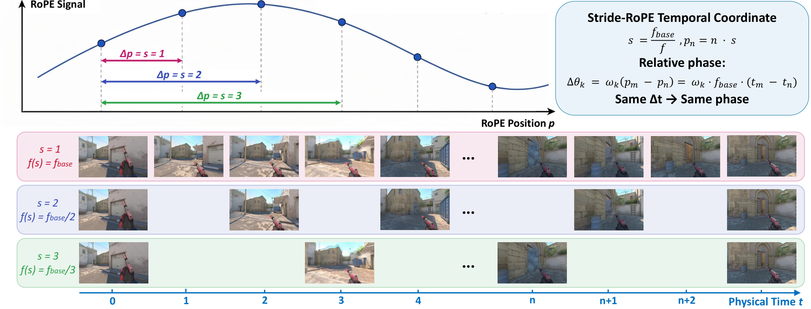
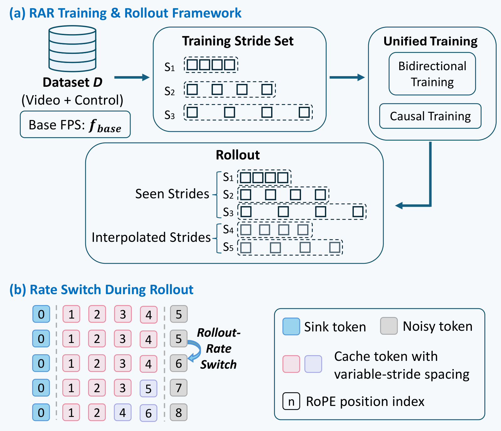
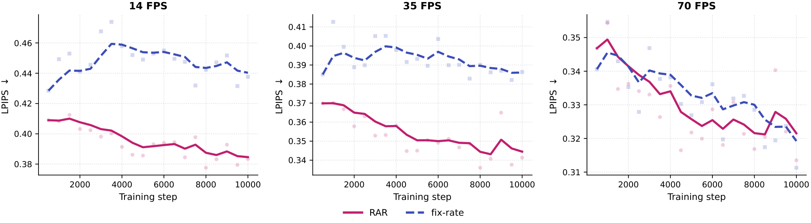
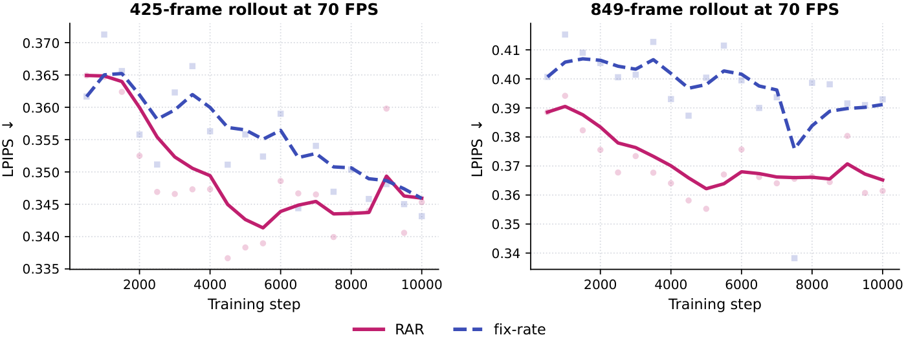
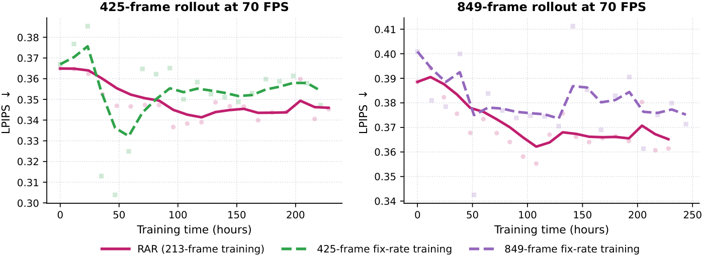

Interactive world models are usually trained and rolled out at one fixed temporal rate. This couples the pace of the generated world to the runtime throughput, and it forces a trade-off between fine motion and long physical horizons. RAR decouples the two with Stride-RoPE, a physical-time temporal RoPE coordinate, together with synchronized multi-stride sampling of videos and controls. One model can then roll out at training rates and at unseen intermediate rates, and it can switch rates on the fly.
Video-based interactive world models aim to enable real-time, user-controllable environments. Yet most existing systems are trained and rolled out at a fixed temporal rate, limiting both runtime-rate adaptation and physical-horizon coverage—a limitation we term temporal-rate coupling. Specifically, when runtime generation throughput differs from the learned temporal rate, the generated world evolves unintentionally more slowly or quickly. Moreover, using a single temporal rate imposes an inherent trade-off between temporal granularity and physical horizon: higher rates capture finer motion but cover a shorter duration under a fixed context window. To address both limitations, we introduce Rate-Adaptive Rollout (RAR), a framework that enables interactive world models to roll out at controllable temporal rates. At its core, Stride-RoPE aligns latent frames sampled at different rates on a shared physical-time coordinate, enabling consistent multi-rate rollout, unseen-rate generalization, and online rate switching without discarding history. Meanwhile, RAR uses multi-stride video sampling to enable joint learning of fine-grained dynamics and long-horizon evolution. Across action- and camera-controlled environments, RAR achieves temporally consistent multi-rate rollout and online rate switching while preserving high-rate generation quality and extending physical horizons under matched training budgets. RAR also transfers to pretrained world models while preserving perceptual quality.
A conventional world model uses one temporal rate for both training and rollout (f_{\mathrm{train}} = f_{\mathrm{rollout}} = f), so every generated frame advances the world by a fixed 1/f seconds. This single rate causes two problems.
A machine generates r frames per wall-clock second. Each road has two lanes. Upper lane, fixed-rate model: trained at f = 30 FPS, every frame advances the world by 1/30 s, so the world runs at \rho = r/30 of real time. Lower lane, RAR: with f_{\mathrm{rollout}} = r, every frame advances 1/r s, so every machine keeps real time (\rho = 1).
Every sample holds the same budget of N = 7 frames, so its physical horizon is T = (N-1)/f. The band on each map marks the stretch of road one sample covers. A fixed-rate model must choose: a high rate takes fine steps but stops before the turn, and a low rate covers the turn with coarse steps. RAR trains one model on all three strides and gets both.
With frame-index RoPE, the relative phase between frames n and m is (m-n)\omega_k = f\,(t_m-t_n)\,\omega_k. This depends on the sampling rate, so the same physical interval is encoded differently at different FPS. Stride-RoPE instead places frames at physical-time positions:


Videos and controls are sampled together at several strides s \in \mathcal{S}_{\mathrm{train}}, always with N frames. Fine strides learn fast dynamics, and coarse strides reach longer horizons at no extra cost.
The stride sets the rate, f_{\mathrm{rollout}} = f_{\mathrm{base}}/s. Choosing s = f_{\mathrm{base}}/r matches the runtime throughput (\rho = 1), and unseen intermediate rates work too.
Positions accumulate the strides, p_{n+1} = p_n + s_n. With pre-RoPE keys in the KV cache, the rate can change mid-rollout without resetting the cache.
One RAR model generates the same rollout at three target rates, including an Interp. intermediate rate. All three share the same initial condition and the same physical-time control trajectory.
Each panel is played at its own target rate, so all three follow one shared physical clock. A higher rate produces more frames per second, so its frame index grows faster. At any moment the scenes still match, because RAR advances the world by the same physical time regardless of the rate. Click a matched time to pause on it and compare the panels.
Pick an environment and a target rollout rate. Each video shows ground truth (left) and RAR generation (right), played at its target rate.
The number of generated frames is fixed within each environment. Drift is the ratio of last-quarter to first-quarter LPIPS. SR measures rate fidelity, with an ideal value of 1.
| Environment | FPS | Type | Horizon (s) | LPIPS ↓ | Drift | DOVER ↑ | SR → 1 |
|---|---|---|---|---|---|---|---|
| Doom | 14 | Train | 15.1 | 0.4279 | 1.17 | 0.3205 | 0.923 |
| 28 | Interp. | 7.6 | 0.4179 | 1.22 | 0.3269 | 1.003 | |
| 35 | Train | 6.1 | 0.3991 | 1.27 | 0.3153 | 0.999 | |
| 49 | Interp. | 4.3 | 0.4003 | 1.26 | 0.3156 | 0.986 | |
| 70 | Train | 3.0 | 0.3852 | 1.34 | 0.3049 | 1.082 | |
| CS2 | 16 | Train | 15.0 | 0.6489 | 1.52 | 0.3928 | 0.983 |
| 24 | Interp. | 10.0 | 0.6200 | 1.60 | 0.4187 | 1.009 | |
| 32 | Train | 7.5 | 0.5980 | 1.61 | 0.4402 | 0.970 | |
| 48 | Interp. | 5.0 | 0.5944 | 1.67 | 0.4369 | 1.024 | |
| 64 | Train | 3.8 | 0.5823 | 1.69 | 0.4323 | 1.097 | |
| FPV | 20 | Train | 12.0 | 0.5247 | 1.35 | 0.2827 | 1.031 |
| 30 | Train | 8.0 | 0.5161 | 1.41 | 0.2766 | 1.040 | |
| 40 | Interp. | 6.0 | 0.5011 | 1.42 | 0.2733 | 0.960 | |
| 50 | Interp. | 4.8 | 0.5035 | 1.45 | 0.2843 | 1.007 | |
| 60 | Train | 4.0 | 0.4944 | 1.49 | 0.2956 | 0.917 |
RAR follows a changing target rate within one continuous rollout, without clearing the KV cache or restarting generation. We test a smooth stride curve and an abrupt schedule of six constant-stride segments.
Each pair is one environment under the two schedules. The chart under each video shows the target FPS, and the marker follows playback. Videos play at a fixed frame rate, so a high target rate looks slower and a low target rate looks faster.
We train on Doom at the bidirectional stage. Under matched updates with a fixed 213-frame window, RAR improves low-rate generation and matches the single-rate 70 FPS baseline at 70 FPS. Under matched wall-clock time, the 213-frame RAR model outperforms 70 FPS baselines trained on 425- or 849-frame windows. Those windows cost 1.56× and 5.25× more time per update.



We adapt the pretrained SANA-WM in two stages. First, a bidirectional teacher is fine-tuned on 10, 20 and 30 FPS data (3k steps). Second, 3k steps of multi-rate Self-Forcing produce a streaming student. LPIPS improves at every rate, and rate fidelity improves at 10, 20 and 30 FPS.
RAR addresses temporal-rate coupling in interactive world models. It combines physical-time-aligned Stride-RoPE with synchronized multi-stride sampling of videos and controls. The result is consistent generation at training and unseen rates, online rate switching, and a better quality–horizon trade-off. RAR can adapt its rollout rate to runtime throughput while keeping physical-time semantics consistent, which offers a practical path toward flexible, real-time interactive world models on different hardware.
@article{liu2026rar,
title = {RAR: Rate-Adaptive Rollout for Time-Consistent Interactive World Models},
author = {Liu, Yaoyang and Yan, Dongyu and Du, Yihua and Qian, Shengju and
Xie, Zeke and Wang, Xin and Chen, Ying-Cong and Chen, Long},
journal = {arXiv preprint arXiv:2610.16302},
year = {2026}
}